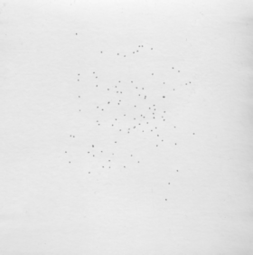
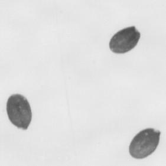

Select an image by double clicking the image of interest. The input 2D image should look something like this:

The 100% magnification on our images lookes like this:

Start analysis by clicking "Detect seeds".
Detected seeds will show up in the viewer somthing like this:
You can also plot the distribution of seed areas right in your web browser by pressing "Plot distribution of areas" button. The plot should look something like this: